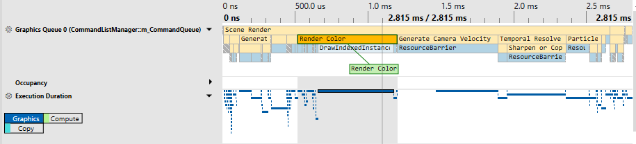
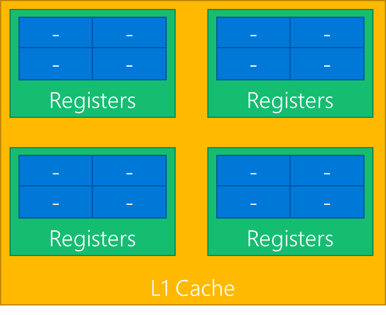
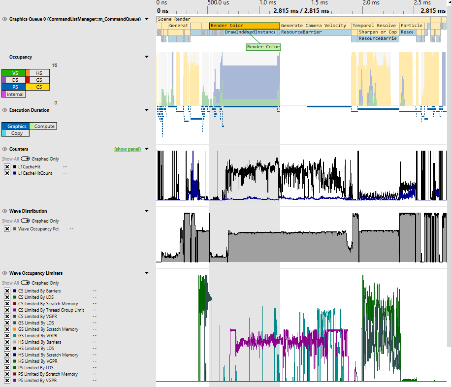
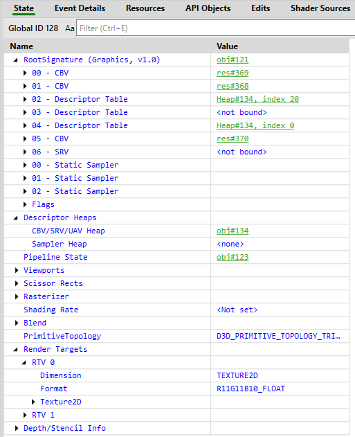
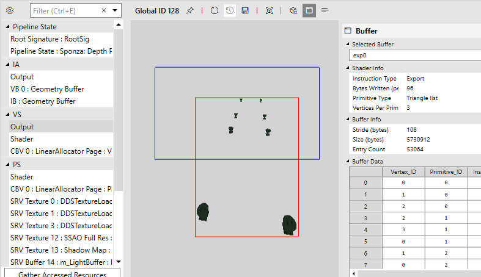

GPU (or frame) captures record all of the Direct3D 12 API calls your application makes, typically in a single frame (see Take a GPU capture). PIX can replay those API calls to show you information about API call parameters, pipeline and resource states, resource contents, and more.
[!TIP] It's not always possible for PIX to successfully take a GPU capture if a game is calling Direct3D 12 in invalid ways. PIX makes a best effort to be robust even in the case of incorrect usage patterns, but this is inevitably sometimes a case of garbage in, garbage out. If you are having difficulty taking GPU captures, try using the D3D12 Debug Layer and GPU-based validation to find and fix any bad API calls.
From the Connection view, either launch or attach to your desired process (ensuring the relevant For GPU Capture option is checked).
Configure your GPU capture options as necessary. To take the capture, either click the Take GPU Capture button in PIX or press Alt+Print Screen (or F11, configurable in PIX settings). You will see a thumbnail of the capture in the PIX UI. At this point you can terminate your application if desired. Click on the thumbnail to open the capture.
You can programmatically take a capture using the WinPixEventRuntime. For details, see the blog post Programmatic capture.
The Events view shows all the API calls that were recorded into a GPU capture. There is a separate list for each Direct3D 12 queue (graphics, compute, or copy) that was used by the game.
The event list can be filtered, optionally using regular expressions (click the button labeled .*). By default it shows only events that resulted in actual rendering work for the GPU hardware, as opposed to simply preparing state for use by later operations. To include non-GPU events, click the button labelled !G.
More information about each event, such as the full set of API call parameters, is available in the Event Details view. That view is included by default in the Pipeline tab, but can also be added to your current layout via the Layout Design Mode button in the upper right corner of the main PIX window.
With a GPU capture open, switch to the Overview tab. Here you'll see some basic details about the capture.
To start profiling, you'll need to collect timing data. To do that, click the Collect Timing Data button at the top right of the Events view, or click the Click here to start analysis and collect timing data text in the Timeline view. That replays the GPU work in the capture and collect basic timing data such as Execution Durations (annoted with PixEvents, if your application has them). Once finished, you can collect additional data to be graphed in Timeline lanes, like occupancy information and other GPU-specific counters.
[!TIP] For best results, don't interact with your computer while PIX is collecting timing data; and close any other applications that might be using the GPU.
You can also see counters broken down by API call in the Events view. To enable/disable counters, click the Event List Counters button (top right of the Events view).
There are two sources of GPU timing information:
Because GPUs are massively parallel and deeply pipelined, it's common for more than one piece of work to be executing at the same time, and for adjacent operations to overlap. PIX measures time in two different ways that can offer insight into the parallel execution model of the hardware:
The Timeline view displays one or more lanes showing the timing of each GPU operation. There's a separate lane containing EOP Duration data for each queue (graphics, compute, or copy) used by the game, plus a single lane showing Execution Duration data (where available) combined across all the queues.

[!TIP] PIX on Windows doesn't currently overlap GPU work on different queues while analyzing timing in GPU captures. Consider taking a Timing capture if you want to see overlapping async compute timing data. In GPU Captures, if a game uses async compute to execute rendering and compute work simultaneously, then PIX will instead measure first one and then the other. This may result in shorter reported durations for each part of the work compared to how it would execute inside the original game (due to reduced contention on the GPU) but a longer total time (due to reduced parallelization).
PIX exposes hardware-specific performance counters provided by IHVs via a GPU plugin. These counters can be enabled and collected in either the Event List Counters view (button to enable at top right of Events view) or the Timeline Counters view (button to enable at top right of Timeline view).
On some GPUs, PIX can also gather occupancy information. GPUs are usually constructed as a hierarchy of repeated blocks, where each level might share a resource. For example, an imaginary GPU might be structured like this

GPUs execute shaders by breaking up the shader work into waves (those are also called warps, or wave fronts). In the above diagram, each blue block is capable of executing one wave. Each green block could execute up to four waves.
As all the blues share a single set of registers, if a workload needs all the registers then only one wave at a time can execute in the green block. In that case the occupancy of the green block would be 1, out of a total possible occupancy of 4.
At any time, all the green blocks might be executing a different number of waves. Of the four green blocks above, one might be executing 3 waves, another 2 waves, and the remaining 1 wave. PIX boils all that data down to a single value—the maximum occupancy, which would be 3 in this example.
That's presented in PIX in the Occupancy lane, which shows the maximum occupancy, separated by shader stage. That's an indication of how much work the GPU is able to do in parallel—higher bars show better GPU utilization.

With a GPU capture open, switch to the Pipeline tab. That tab contains an Events view, several state and resource inspector views, and a Pipeline view.
Selecting an event in the Events view populates various views, notably the Pipeline view, which can be used to inspect root signatures, and pipeline state, and bound resources. The Pipeline view is also the entry point into Shader Debugging.
[!TIP] To perform most features, you'll need to start analysis. Analysis is how PIX collects timing data, state information, and resources. There are many ways to start analysis, but the global way is via the Start Analysis Play button at the top-right of the application. Make sure the desired GPU is selected.
After selecting an event in the Events view, the State and Pipeline views (found in the Pipeline tab) show details of the Direct3D state at the time of that event. There you can view which resources are bound to the pipeline, shader code, inputs, outputs, and the currently bound rendertarget(s).


After selecting an appropriate event, and running analysis, you can debug your shaders. In the Pipeline view, there are several ways to initiate shader debugging:
[!TIP] If you're not able to see the shader source when debugging, you're likely missing debug information. Ensure you're generating the shader PDBs for your application, and that you have configured PIX to load those PDBs.
HLSL shader code can be edited directly inside PIX, allowing you to immediately see the effect of your changes on rendering results or performance. That can be useful for prototyping and optimizing shaders, because it can greatly reduce the turnaround time when trying out different ideas.
After selecting a shader, you can edit its code however you like, then click Edit > Apply. Other views (such as OM RTV 0) will update to show the effect of your change. You might find it useful to dock more than one instance of the Pipeline view next to each other in order to view rendertarget results at the same time as editing shader code.
If you lose track of exactly what you'ave changed, then right-click on the shader code, and choose Diff with Original.
[!TIP] PIX on Windows doesn't yet support saving modified shaders back into the capture file.
Rendertarget visualizers are available in the Pipeline view when inspecting the contents of a rendertarget. The default image visualizer just shows the image as normal, and can be changed by selecting a different visualization in the Visualization view.
For any pixel-like resource (for example, RTVs, UAVs, or depth buffers), you can view all operations that affected a particular pixel by using Pixel History. That can be accessed by right-clicking on the desired pixel, and selecting Show Pixel History, or by clicking the Pixel History button in the Pixel Details view.